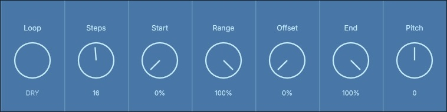
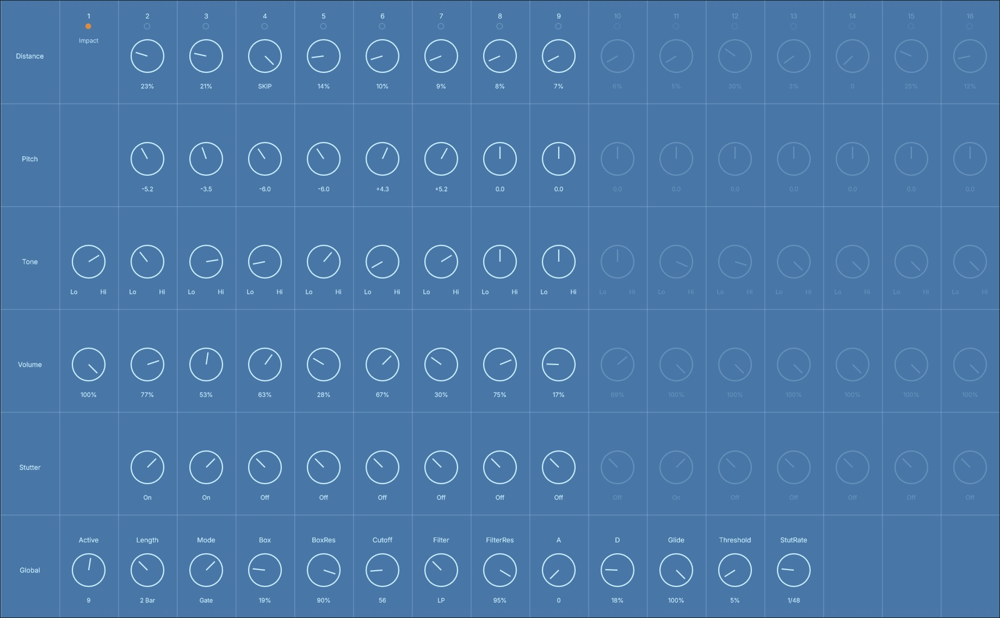
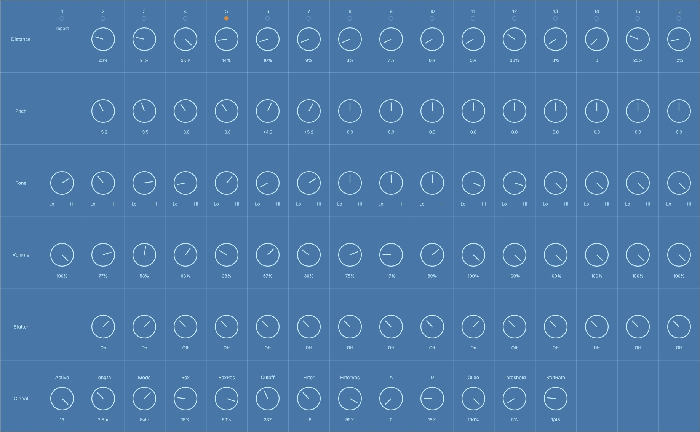

bartFXAudio
Experimental Audio Tools
Small, focused audio tools for sound manipulation, repetition, rhythm, glitches and controlled accidents.
bartCDskip

A micro-loop audio effect inspired by the sound and behaviour of a skipping compact disc.
Capture a fragment of incoming audio, define the skip area, and turn it into a repeating rhythmic texture.
bartCollisionBox


An experimental collision-based audio effect designed for rhythmic movement, impacts and controlled sonic interaction.